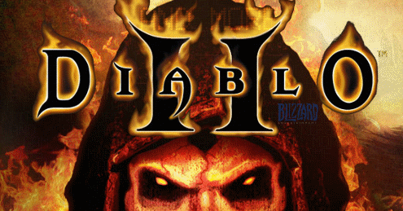

Vítej příteli!
Zde máš k dispozici hru kterou jsem vytvořil jako semestrální práci do předmětu Java na VŠE. Hra je oddychová, nijak náročná. Jediné co potřebuješ vědět je, že se potřebuješ dostat do Katakomb a zabít Andariel která postupně pustoší tuto zemi. Na cestě k ní se avšak potřebuješ vyzbrojit a získat předměty které ti pomou k jejímu zabití (nedá se jen tak snadno). Předměty ti dají jednotlivé postavy za splnění určitých úkolů, které ti sdělí.
Jedná se o textovou hru, takže zadáváš příkazy a hra na ně reaguje Seznam příkazů najdeš pod příkazem nápověda a s němi i nějakou radu která ti pomůže v zamotaných situacích. Pokud nebude vědět co zadat za příkaz, klidně jej napiš samotný, zobrazí se ti seznam příkladů.
Přeji ti spokojené hraní a hodně sentimentálních vzpomínek na tento báječný titul
Návod ke spuštění hry:
Potřebuješ spustit příkazový řádek – cmd.exe pomocí CTRL+R
Tam se dostat do této složky příkazy „cd“ (change directory) (po zadání cd ti tabulátor napovídá kam můžeš jít)
cd Dokumenty/Michal_Chobola
zde pak spustíš hru tímto příkazem
java -jar Diablo_Final_Michal_Chobola.jar
Pokud ti ve hře nepůjde sebrat meč, a budou se ti zobrazovat špatně znaky, vyjeď ze hry, zadej tento příkaz (změna kódování)
chcp 1250
a znovu hru spusť